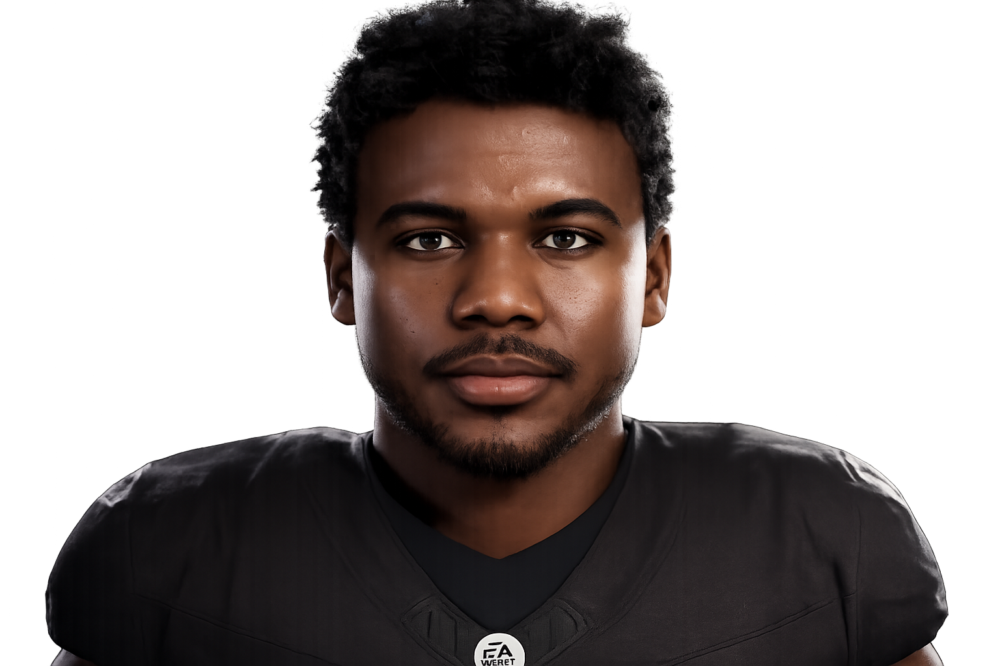

Samuel Owusu
#3 | Wide Receiver | Redshirt Senior
Lagos, Nigeria | 6'3", 200 lbs
Player Information
| Detail | Info |
|---|---|
| Full Name | Samuel Owusu |
| Number | #3 |
| Position | Wide Receiver (WR) |
| Class | Redshirt Senior |
| Height / Weight | 6'3" / 200 lbs |
| Hometown | Lagos, Nigeria |
| Status | Graduated |
Season 1 Stats
| Stat | Value |
|---|---|
| Games Played | 13 |
| Receptions | 60 |
| Receiving Yards | 896 |
| Yards Per Reception | 14.9 |
| Receiving Touchdowns | 7 |
| Longest Reception | 63 yds |
| Yards After Catch (RAC) | 218 |
| RAC Average | 3.6 |
| Drops | 4 |
Top 3 Performances
| Game | Rec | Yds | TD | Highlight |
|---|---|---|---|---|
| Bowl vs Old Dominion (W 38-16) | 9 | 95 | 0 | Tied single-game receptions record. One-handed catches, double-coverage grabs, toe-tap catch in his final game. |
| Week 9 @ FAU (W 41-38) | 8 | 127 | 0 | Led game-sealing drive in the rain. Focal point of the passing game. 2 contested catches in coverage. |
| Week 11 @ #23 Auburn (W 39-38) | 5 | 54 | 1 | Caught the game-winning TD from third-string QB Ryan Vincent on the goal line. The defining offensive play of Year 1. |
Highlight

Player Storyline | Senior Spotlight
Our starting wide receiver was a unique type of wideout. He almost never beat defenders with speed. He was actually one of the slowest starting receivers in the SEC. What Samuel Owusu did was something simpler and more violent; he caught everything thrown in his direction, and once he caught it, he refused to go down.
Throw it up to him in single coverage, and he was coming down with it. Throw it up in double coverage, and there was still a better chance he caught it than not. From jump balls, to one handers, to toe-tapping sideline catches, all routine for #3. It was not a matter of if he was going to catch it, 90 percent of the time, it was a matter of how.
After the catch, he became a different player entirely. He trucked defenders, he broke arm tackles, he lowered his shoulder and powered through contact, fighting for every inch of yardage.
He led our team in receptions and receiving yards as a senior, graduating as one of the toughest receivers on our roster, one of the toughest in the Southeastern Conference , and one of the toughest in college football.